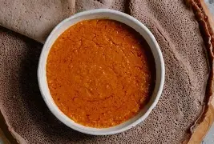

Home
Shiro wat

Shiro is a popular Ethiopian dish made from ground chickpea (or broad bean) flour cooked with spices, oil, onions, garlic, and sometimes tomatoes. It has a smooth, thick texture and is usually served hot with injera.
Ingredients
- Shiro flour (chickpea powder)
- Onion
- Water
- Oil
Steps
- Heat oil or niter kibbeh in a pot.
- Sauté chopped onions until soft.
- Add shiro flour and mix well.
- Slowly add water while stirring.
- Cook until thick and smooth.
- Simmer for a few minutes and serve hot.